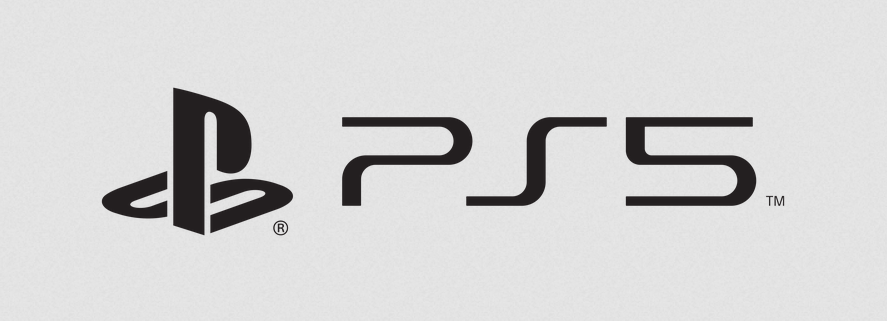

The history from past to present:
1996 - PS1
The PlayStation, one of a new generation of 32-bit consoles, signaled Sony's rise to power in the video game world. Also known as the PS One, the PlayStation used compact discs (CDs), heralding the video game industry's move away from cartridges.
2001 - PS2 
The Second Generation video game console from Sony. DVD based and introduced in the U.S. in 2000 after great success in Japan, the first PS2 models came with a 128-bit, 300 MHz Emotion CPU. Also included was a MIPS R3000 chip for I/O handling and backward compatibility with the earlier PlayStation.
2006 - PS3
A video game console from Sony that was introduced in late 2006. Containing a high-definition Blu-ray drive that also reads DVDs, CDs and SACD discs, the PS3 uses the Cell processor, which is considerably more powerful than the CPU in the PlayStation 2 (PS2).
2014 - PS4
The PlayStation 4 (PS4) is a home video game console developed by Sony Interactive Entertainment. Announced as the successor to the PlayStation 3 in February 2013, it was launched on November 15, 2013, in North America, November 29, 2013 in Europe, South America and Australia, and on February 22, 2014 in Japan. A console of the eighth generation, it competes with the Microsoft's Xbox One and the Nintendo's Wii U and Switch.
2020 - PS5 
The PlayStation 5 (PS5) is a home video game console developed by Sony Interactive Entertainment. Announced in 2019 as the successor to the PlayStation 4, the PS5 was released on November 12, 2020, in Australia, Japan, New Zealand, North America, and South Korea, with worldwide release following a week later. The PS5 is part of the ninth generation of video game consoles, along with Microsoft's Xbox Series X and Series S consoles, which were released in the same month.